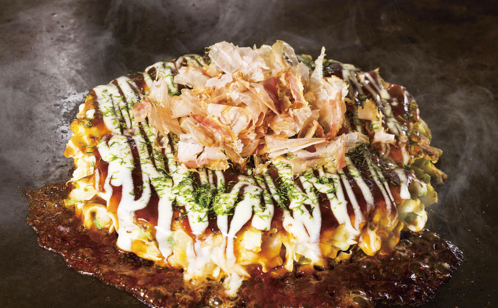
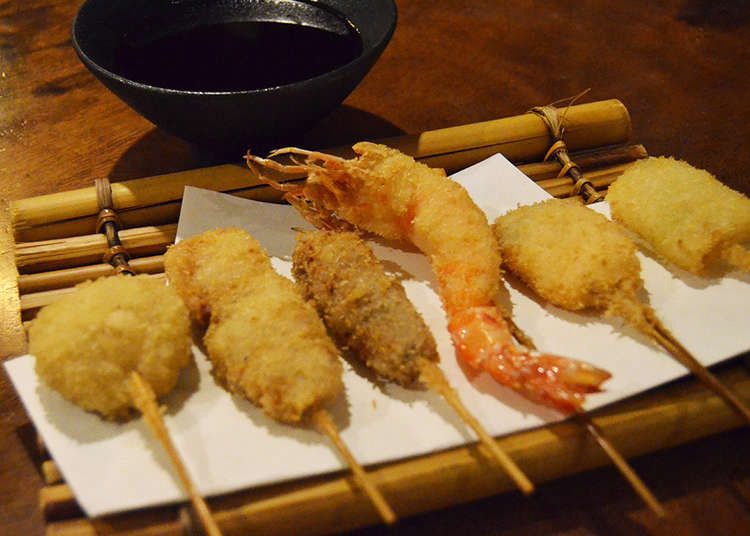
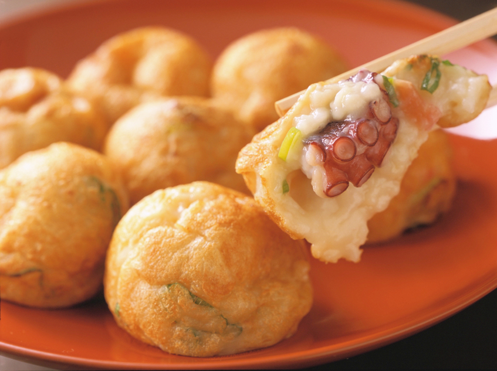

The construction of Osaka Castle started in 1583 on the former site of the Ishiyama Honganji Temple,
which had been destroyed by Oda Nobunaga thirteen years earlier.
Toyotomi Hideyoshi intended the castle to become the center of a new, unified Japan under Toyotomi rule. It was the largest castle at the time.
Osaka Castle and the pleasant park grounds surrounding it make for a relaxing escape from the city's concrete sprawl.
Ascend to the top of castle keep tower to look over the expansive castle grounds and neighboring skyscrapers.
Okonomiyaki
Okonomiyaki is a little tongue twister of a word, and eating it will make your tongue twist in delight.
The core of okonomiyaki is a cabbage pancake of sorts made with wheat flour, egg, mountain yam and tenkasu,
thinned with water or dashi. The latter two ingredients in particular are distinguishing features of Kansai-style okonomiyaki.
However, there’s a good deal of flexibility in the toppings and protein components that go into it
– pork belly is a popular choice, as are octopus slices, squid, shrimp, vegetables, konnyaku jelly, and cheese. Vary them as you please!


Kushikatsu
It was during prewar that kushikatsu was supposedly born, created to cater to working class laborers who needed cheap, fast, tasty fuel.
Kushikatsu literally means ‘pork cutlet on a stick,’ but refers to this genre of skewered, battered and deep-fried food.
Anything can be kushikatsu’d. Chicken gizzards. Asparagus. Cubes of cheese. Oysters. Pork dumplings. Ice cream. Your left shoe.
It’s hard to go wrong with these greasy little heart palpitations.
Takoyaki
Takoyaki is a very casual fast food in Japan.
It might not be easily found at Japanese restaurants in the US or other parts of world even though it is a very popular dish.
Takoyaki tastes a little bit like round shaped Okonomiyaki, but it has a much different flavor from the Tako (octopus) cooked inside them.
In most parts of Japan, people don’t treat Takoyaki as a meal.
Many people typically think of Takoyaki as something you get from street vendors at festivals and events.
